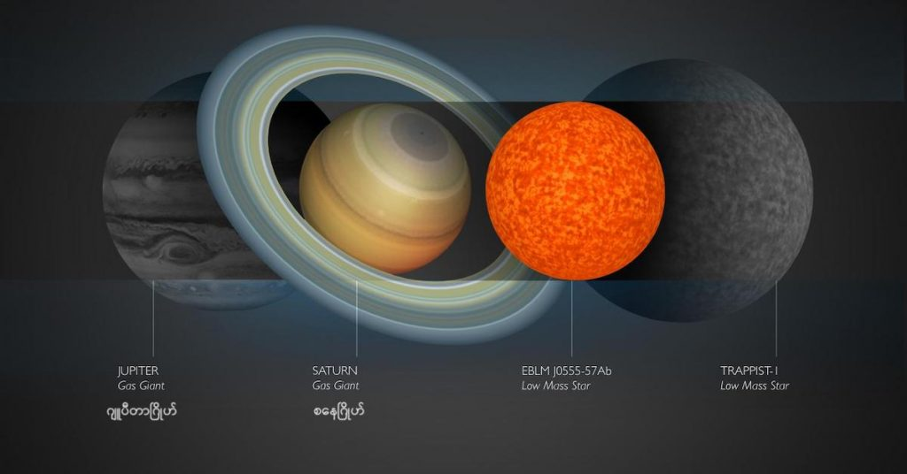

နာဆာရဲ့ ကက်ပလာ အာကာသ တယ်လီစကုပ် (Kepler spacecraft and Transiting Exoplanet Survey Satellite) ကြီးက ဖမ်းယူထား ခဲ့တဲ့ အချက်အလက် တွေကို အသေးစိတ် သုတေသန ပြုရာက ဒီ ဂြိုဟ်ကို ရှာဖွေ တွေ့ရှိ ခဲ့ကြတာ ဖြစ်ပါတယ်။
ဒီ ဂြိုဟ်ဟာ ကမ္ဘာနဲ့ဆို အလင်းနှစ် ၇၀ ပဲ ဝေးတာမို့ အတော်လေး နီးတဲ့ ဂြိုဟ်လို့ ပြောရမှာ ဖြစ်ပါတယ်။ တနည်းအားဖြင့် ကျွန်တော်တို့ နေနဲ့ဆို အိမ်နီးချင်း လို့တောင် ပြောလို့ရပါတယ်။
အသစ်တွေ့တဲ့ ဂြိုဟ်ကို K2-415b လို့ အမည် ပေးထားပါတယ်။ ဒီ ဂြိုဟ်ဟာ ကမ္ဘာနဲ့ အနီးဆုံး ပြင်ပဂြိုဟ် (Exoplanet) တော့ မဟုတ်ပါဘူး။ ဒါပေမယ့် စကြာဝဠာ တစ်ခုလုံးရဲ့ အတိုင်းအတာနဲ့ ယှဉ်မယ် ဆိုရင်တော့ အိမ်နီးနားခြင်း လို့ ပြောလို့ ရလောက်အောင် နီးတဲ့ဂြိုဟ် ဖြစ်ပါတယ်။
K2-415b ဟာ K2-415 လို့ အမည်ပေး ထားတဲ့ ကြယ်ကို ပတ်နေတဲ့ ဂြိုဟ်တစ်စင်း ဖြစ်ပါတယ်။ ဒီ ကြယ်ဟာ မစ်ကီးဝေး ဂလက်ဆီ ကြီးထဲက အရံဂြိုဟ် ပိုင်ဆိုင်တဲ့ ကြယ်တွေ အနက် အအေးဆုံး နဲ့ ဒြပ်ထု အသေးဆုံး ကြယ်တစ်စင်း ဖြစ်ပါတယ် လို့ ဒီ ဂြိုဟ်ကို တွေ့ရှိခဲ့တဲ့ သုတေသန အဖွဲ့ရဲ့ အဖွဲ့ဝင် တစ်ဦးဖြစ်သူ တီရူယူကီ ဟီရာနို (Teruyuki Hirano) က ရှင်းပြပါတယ်။ သူဟာ ဂျပန်နိုင်ငံ Graduate University for Advanced Studies (SOKENDAI) က နက္ခတ် သုတေသီ တစ်ဦး ဖြစ်ပါတယ်။
မစ်ကီးဝေး ဂလက်ဆီ ထဲမှာ ရှာဖွေ တွေ့ရှိ ခဲ့ပြီးသမျှ ဂြိုဟ်ပိုင်ဆိုင်တဲ့ ကြယ်တွေအနက် K2-415 ကြယ်ထက် ပိုအေးတဲ့ ကြယ်ဆိုလို့ အခုထိ ၄ စင်းပဲ ရှာတွေ့ ထားပါသေးတယ်။ ဒီ ကြယ်တွေ အနက် အထင်ရှားဆုံး ကြယ်ကတော့ ဂြိုဟ် ၇ စင်း ပိုင်ဆိုင်တဲ့ TRAPPIST-1 ကြယ်ပဲ ဖြစ်ပါတယ်။
ဆက်စပ်ဆောင်းပါး – မစ်ကီးဝေး ဂလက်ဆီ အတွင်းက အသေးဆုံး ကြယ်
ဟီရာနို က ဆက်ရှင်းပြရာမှာ ဒီလို ဒြပ်ထုသေးတဲ့ ကြယ်တွေ ဝန်းကျင်က ဂြိုဟ်တွေကို ရှာဖွေ လေ့လာဖို့ ပညာရှင်တွေ စိတ်ဝင်းစားစေတဲ့ အချက်တစ်ချက် ကတော့ ဒီ ကြယ်တွေကို ပတ်နေတဲ့ ဂြိုဟ်တွေ ဖြစ်ပေါ် မွေးဖွားလာတဲ့ ဖြစ်စဉ်ဟာ နေအရွယ် ကြယ်တွေ ပတ်လည်က ဂြိုဟ်တွေ မွေးဖွား ဖြစ်ပေါ်လာ ခဲ့တဲ့ ဖြစ်စဉ်နဲ့ ဘယ်လောက်ထိ နီးစပ် သလဲ ဆိုတာကို သိချင် ကြတာပဲ ဖြစ်ပါတယ်။
နေအရွယ် ကြယ်တွေရဲ့ သဘောသဘာဝ နဲ့ ဖွဲ့စည်းပုံဟာ ကျွန်တော်တို့ နေ နဲ့ အလားသဏ္ဍာန် တူညီ ကြပါတယ်။ ကြယ်နီပု (Red dwarf stars) တွေကတော့ နေနဲ့ သဘော သဘာဝ မတူညီ တာတွေ ရှိနေပါတယ်။

နောက်ပြီး သူ့ရဲ့ အရွယ်အစား ကလဲနေထက် အများကြီး ပိုသေးပါတယ်။ K2-415 ရဲ့ အချင်းဟာ နေရဲ့ အချင်းရဲ့ ၅ ပုံ တစ်ပုံပဲ ရှိပါတယ်။ သူ့ရဲ့ ဒြပ်ထုကလဲနေရဲ့ဒြပ်ထုရဲ့ ၆ ပုံ ၁ ပုံ (၀.၁၆ ဆ) ပဲ ရှိပါတယ်။
ဆက်စပ်ဆောင်းပါး – စကြာဝဠာ အတွင်း ဂြိုဟ်ပေါင်း ၅,၀၀၀ ကျော် ရှာတွေ့ထားပြီ
ပြင်ပဂြိုဟ် (exoplanet) တွေ များများ ရှာတွေ့လေ သက်ရှိတွေ ရှင်သန်ပေါက်ပွား နေနိုင်တဲ့ ဂြိုဟ်တစ်စင်း ရှာတွေ့ဖို့ အခွင့်အလမ်း ပိုများလေလေပဲ ဖြစ်ပါတယ်။
အခု K2-415b ဂြိုဟ် ကတော့ သက်ရှိတွေ ရှင်သန်နိုင်ဖို့ အခွင့်အလမ်း ရှိတဲ့ရပ်ဝန်း (Habitable zone) အတွင်းမှာ ရှိမနေ ပါဘူး။ တနည်းအားဖြင့် သူ ရှိတဲ့ အရပ်ဟာ ရေ အရည်အဖြစ် ရှိနေနိုင်တဲ့ ရပ်ဝန်း မဟုတ်ပါဘူး။
သက်ရှိတွေ ဖြစ်ထွန်းဖို့ အရည်ပျော် နေတဲ့ ရေ ရှိဖို့ လိုအပ်တာမို့ ရေ ဟာ ရေခဲ (သို့) ရေငွေ့ အဖြစ်သာ ရှိနေနိုင်တဲ့ ဂြိုဟ်တစ်စင်းမှာ သက်ရှိတွေ ရှင်သန်ဖို့ မဖြစ်နိုင် ဘူးလို့ ပညာရှင် တွေက ယုံကြည် ကြပါတယ်။
K2-415b ဟာ သူ့ရဲ့ မိခင်ကြယ်နဲ့ အရမ်းကို နီးကပ် လွန်းနေပါတယ်။ ဘယ်လောက်တောင် နီးကပ်သလဲဆိုရင် မိခင်ကြယ်ကို တစ်ပတ် ပတ်မိဖို့ ကမ္ဘာရဲ့ ရက်နဲ့ဆို အချိန် ၄ ရက်ပဲ ကြာပါတယ်။

ဟီရာနို နဲ့ အဖွဲ့ဟာ ဒီ ဂြိုဟ်ကို အသေးစိတ် စူးစမ်း လေ့လာဖို့ မျှော်လင့် ထားကြပါတယ်။ သူ့ရဲ့ ဒြပ်ထုနဲ့ အတွင်းပိုင်း ဖွဲ့စည်းပုံ တွေကိုလဲ သေသေချာချာ သိချင် ကြပါတယ်။ အခု ပဏာမ ခန့်မှန်း ချက်တွေ အရတော့ ဒီ ဂြိုဟ်ဟာ ကမ္ဘာထက် ဒြပ်ထု အားဖြင့် ၃ ဆ ခန့်အထိ ကြီးမားနိုင်မယ်လို့ ဆိုပါတယ်။ ဒါပေမယ့် သူ့ရဲ့ အရွယ်အစား ကတော့ ကမ္ဘာနဲ့ အရွယ် အတူတူလောက်ပဲ ရှိနေပါတယ်။
“အခုထက် ထိတော့ ဒီ ကြယ်ကို ပတ်နေတဲ့ ဂြိုဟ်တစ်စင်းပဲ ရှာတွေ့ ပါသေးတယ်” လို့ ဟီရာနိုက ဆက်ရှင်းပြပါတယ်။ “ဒါပေမယ့် ဒီကြယ်မှာ ဂြိုဟ်တစ်စင်းပဲ ရှိလိမ့်မယ်လို့ ဘယ်လိုမှ ပြောလို့ မရ့ပါဘူး” လို့ သူက ဆက်ပြောပါတယ်။
“နောက်ထပ် မိခင်ကြယ်ကို စူးစမ်း လေ့လာ မှုတွေကနေ နောက်ထပ် ဂြိုဟ်တွေ ထပ်ပြီး ရှာဖွေ တွေ့ရှိ နိုင်ပါသေးတယ်” လို့ ဟီရာနိုက အဆုံးသတ် မှန်ချက် ပေးပါတယ်။
Ref: Earth-size exoplanet spotted just 72 light-years away | Space